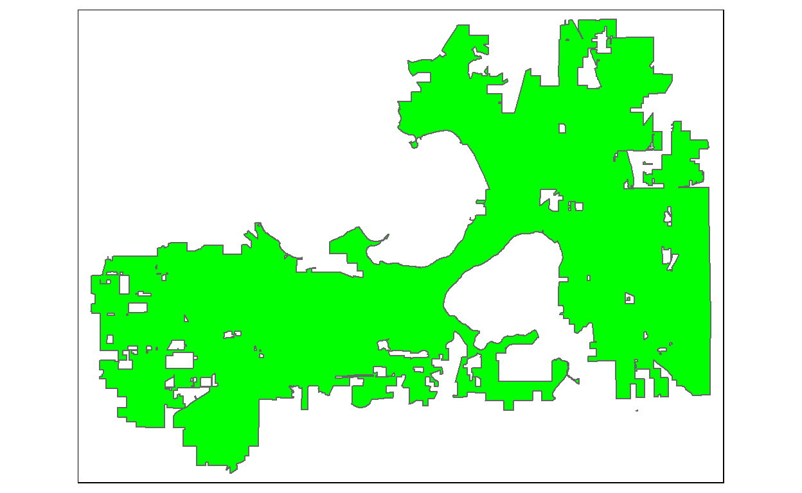
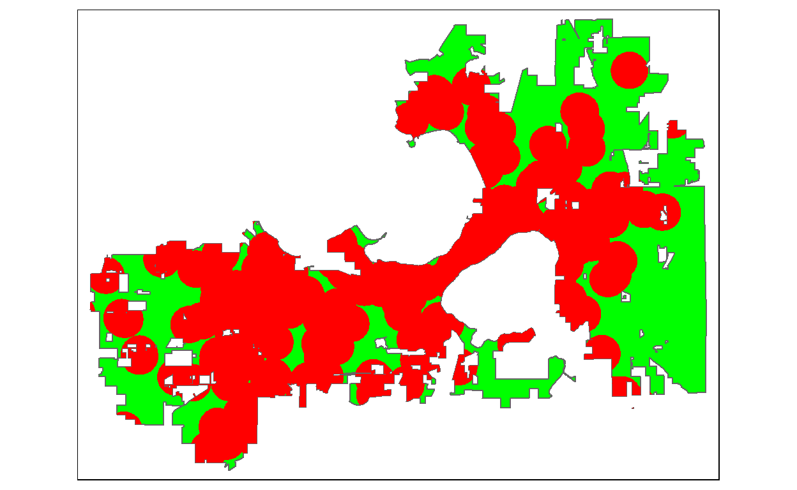
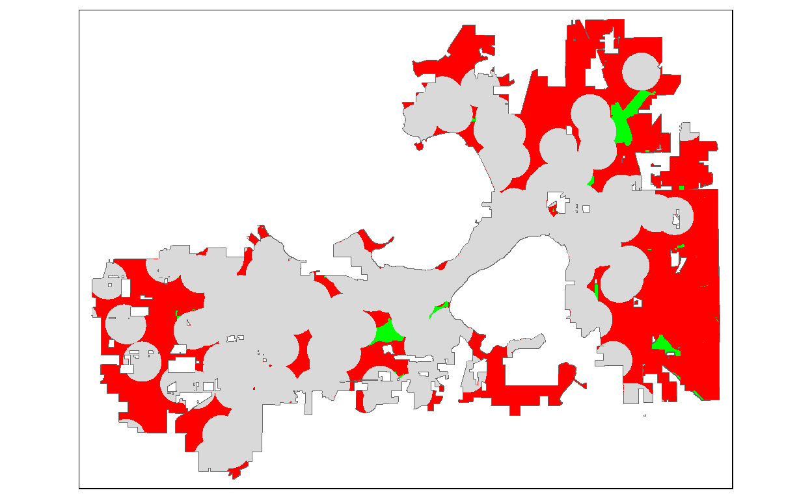
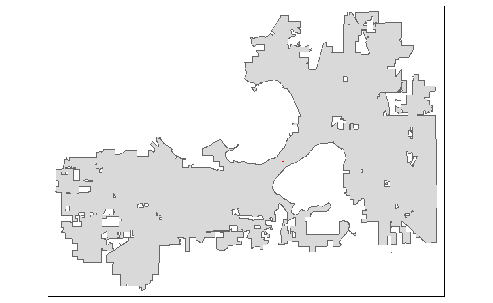
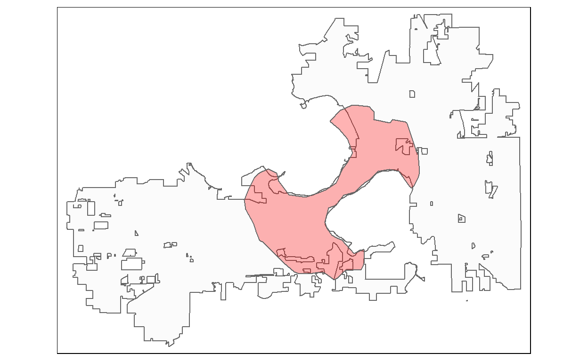
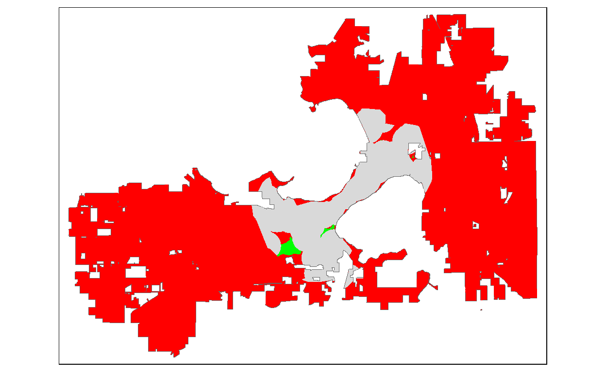

Policymakers proposed criteria for a where a shelter for homeless men in Madison (Wisconsin) could and couldn’t go. This post uses public data to visualize these criteria, showing that in the end the resolution would have meant that the shelter can’t go anywhere.
This post is about using publicly available data to examine local policy proposals. A local blogger pointed out a resolution to the Madison Common Council that would have established a number of criteria for possible locations for a shelter for men experiencing homeless. The shelter had been debated for many years, and unsurprisingly it was controversial. The criteria specified in the draft resolution were as follows:
That’s a lot of places where the shelter must not be! It’s also a number of criteria that I could easily map with publicly available data. The meeting at which the resolution would be first discussed was on the same day and I only had the morning before work and my lunch break to put something together. Here’s what I submitted, and there was some post-meeting coverage from a local blogger. Because of the time constraint, the product was not the prettiest, and in this post I make some improvements and include the code.
What I should have done first but didn’t was to start with the Madison city limits. The shelter is a city shelter and therefore must be within the City of Madison. There are multiple enclaves and exclaves, and so starting with the city limits as the most expansive possible search area should be step 1. Then we can use the other criteria to “stamp out” anything that doesn’t fit. City limits are available on the City of Madison Open Data portal.
city_limit <- st_read("data/City_Limit.shp") %>%
st_transform(6610)
Reading layer `City_Limit' from data source `C:\Users\user1\Documents\shelter_locations\data\City_Limit.shp' using driver `ESRI Shapefile'
Simple feature collection with 4 features and 3 fields
Geometry type: POLYGON
Dimension: XY
Bounding box: xmin: -89.57165 ymin: 42.99815 xmax: -89.24663 ymax: 43.17202
Geodetic CRS: WGS 84tm_shape(city_limit) +
tm_polygons("green")

First of all, the idea that children need to be kept away from people experiencing homelessness is wrong. Second, most people don’t realize how many schools and childcare locations there are. For childcare providers, the Wisconsin Department of Health and Human Services provides a dataset of “[p]oint locations and attributes of certified childcare facilities licensed by the state of Wisconsin.” Public school data is available from the National Center for Education Statistics. Conveniently, both datasets are provided as shapefiles. I didn’t look for data sources for private schools.
First we read in the child_care data. I noticed that there is a “capacity” attribute in the dataset. To avoid debates of whether the resolution sponsors would consider someone who provides care to only a few children a “childcare facility,” I filtered the data to only those providers with a capacity larger than 9. To create the half-mile buffers around the locations, I need to project the data to a different coordinate reference system (CRS). The crsuggest package helps identify an appropriate CRS. Note that the CRS I chose uses meters as its units, and so 0.5 miles needs to be provided as 805. Finally, I keep only the parts of the buffers that are within city limits.
child_care <- st_read("data/Wisconsin_Licensed_and_Certified_Childcare.shp")
Reading layer `Wisconsin_Licensed_and_Certified_Childcare' from data source `C:\Users\user1\Documents\shelter_locations\data\Wisconsin_Licensed_and_Certified_Childcare.shp' using driver `ESRI Shapefile'
Simple feature collection with 4669 features and 31 fields
Geometry type: POINT
Dimension: XY
Bounding box: xmin: -10372680 ymin: 5197160 xmax: -9694399 ymax: 5946135
Projected CRS: WGS 84 / Pseudo-Mercatorchild_care_buffers <- child_care %>%
filter(COUNTY == "Dane") %>%
filter(CAPACITY >9) %>%
st_transform(6610) %>%
st_buffer(dist = 805) %>%
st_intersection(city_limit)
For the schools, the process was pretty much the same:
Reading layer `EDGE_GEOCODE_PUBLICSCH_1920' from data source `C:\Users\user1\Documents\shelter_locations\data\EDGE_GEOCODE_PUBLICSCH_1920.shp' using driver `ESRI Shapefile'
Simple feature collection with 101688 features and 25 fields
Geometry type: POINT
Dimension: XY
Bounding box: xmin: -176.6403 ymin: -14.34892 xmax: 144.9176 ymax: 71.30034
Geodetic CRS: NAD83schools_buffers <- schools %>%
st_transform(6610) %>%
st_buffer(dist = 805) %>%
st_intersection(city_limit)
Now we can “cut out” the schools and childcare buffers from the city limit map:
tm_shape(city_limit) +
tm_polygons("green") +
tm_shape(child_care_buffers) +
tm_polygons("red", alpha = 1, border.alpha = 0) +
tm_shape(schools_buffers) +
tm_polygons("red", alpha = 1, border.alpha = 0)

It’s obvious: This criterion alone eliminate huge swaths of the city as possible locations.
The site should be zoned for commercial or mixed use, and not adjacent to single-family homes;
I’ve posted about zoning in Madison previously and so I’m pretty familiar with the data. Zoning data is on the Open Data portal.
zoning <- st_read("data/Zoning_Districts.shp")
Reading layer `Zoning_Districts' from data source `C:\Users\user1\Documents\shelter_locations\data\Zoning_Districts.shp' using driver `ESRI Shapefile'
Simple feature collection with 2343 features and 9 fields
Geometry type: MULTIPOLYGON
Dimension: XY
Bounding box: xmin: -89.57153 ymin: 42.99815 xmax: -89.24663 ymax: 43.17202
Geodetic CRS: WGS 84Which zoning districts should be included? Ordinance does have a high-level category called “Mixed use and commercial districts,” which includes
Arguably, many would also consider some of the zoning districts listed under the “Downtown and Urban Core” heading as mixed use. As it has “mixed use” in its name, I’ll include UMX Urban Mixed-Use.
mixed_use <- c("NMX", "TSS", "MXC", "CC-T", "CC", "UMX", "RMX")
zoning_mixed_use <- zoning %>%
filter(!(ZONING_COD %in% mixed_use)) %>%
st_transform(st_crs(city_limit))
I’ll overlay these in red again and change the color of the previously cut out areas to grey.
tm_shape(city_limit) +
tm_polygons("green") +
tm_shape(zoning_mixed_use) +
tm_polygons("red", alpha = 1, border.alpha = 0) +
tm_shape(child_care_buffers) +
tm_polygons(alpha = 1, border.alpha = 0) +
tm_shape(schools_buffers) +
tm_polygons(alpha = 1, border.alpha = 0)

And there goes much of the rest of the city.
I probably could have stopped here, but as it’s an interesting one, I’ll add one more: The 3.5 mile walkshed around the Beacon, an existing homeless services day center on East Washington Ave. For sending my letter, I used the OpenRouteService (ORS) web interface to generate the walkshed. However, it’s also possible to access ORS through an API with the R package openrouteservice-r, which I will do here. First, we geocode the Beacon’s address:
library(openrouteservice)
beacon <- ors_geocode("The Beacon, Madison, Wisconsin, USA", output = "sf", size = 1)
tm_shape(city_limit) +
tm_polygons()+
tm_shape(beacon) +
tm_dots("red")

Now we generate the 3.5 mile walking distance. The ors_isochrone functions requires the location to be a long/lat coordinate pair.
beacon_coord <- st_coordinates(beacon)
beacon_walkshed <- ors_isochrones(st_coordinates(beacon),
profile = ors_profile("walking"),
units = "mi",
range = 3.5,
range_type = "distance",
#smoothing = "15",
output = "sf") %>%
st_transform(st_crs(city_limit))
Quick visual check:
tm_shape(city_limit) +
tm_polygons(alpha = .1) +
tm_shape(beacon_walkshed) +
tm_polygons("red", alpha = .3)

Again, we’ll change the previously cut out parts to grey and show everything outside the walk shed in red.
tmap_mode("plot")
tm_shape(city_limit) +
tm_polygons("green") +
tm_shape(zoning_mixed_use) +
tm_polygons("red", alpha = 1, border.alpha = 0) +
tm_shape(child_care_buffers) +
tm_polygons(alpha = 1, border.alpha = 0) +
tm_shape(schools_buffers) +
tm_polygons(alpha = 1, border.alpha = 0) +
tm_shape(st_difference(city_limit, beacon_walkshed)) +
tm_polygons("red", border.alpha = 0)

We could keep going with the remaining criteria, but a) they’re harder to implement and b) it looks like not much green is left in the map above. This is a good moment to change to interactive viewing and see what those green areas are:
whats_left <- st_intersection(beacon_walkshed, city_limit)
#helper function to "erase" geometry y from x
st_erase <- function(x, y) st_difference(x, st_union(y))
whats_left <- st_erase(whats_left, child_care_buffers)
whats_left <- st_erase(whats_left, schools_buffers)
whats_left <- st_erase(whats_left, zoning_mixed_use)
tmap_mode("view")
tm_shape(whats_left) +
tm_polygons("green", alpha = .5)
Left as possible locations are: The two largest areas are on the water, on Lake Wingra and Monona Bay. Other than some thin slivers of land that are clearly too small (and probably artefacts), there are three remaining spots. Two small triangles in the Eken Park neighborhood near the Oscar Mayer area (one currently a rental car parking lot; the other a single-family home zoned Commercial). And finally a cluster of properties at the intersection of Milwaukee St and Fair Oaks Ave, currently occupied by gas station, a mixed used building with a bridal store, and a restaurant.
Without investigating further, I’m confident that any of those non-water sites would fail one or more of the other criteria. And even if they didn’t: If your criteria set up that in a city the size of Madison your choices are this narrow, you either didn’t understand the implications of this (no shelter) or you did understand them and wanted to hide your policy goals behind seemingly reasonable criteria.
Did you like this post? Consider making a donation to Urban Triage, a Madison-based organization that provides resources to people experiencing or at risk of homelessness. Or support the Madison Tenant Resource Center.
If you see mistakes or want to suggest changes, please create an issue on the source repository.
Text and figures are licensed under Creative Commons Attribution CC BY-SA 4.0. Source code is available at https://github.com/vgXhc/shelter_locations, unless otherwise noted. The figures that have been reused from other sources don't fall under this license and can be recognized by a note in their caption: "Figure from ...".